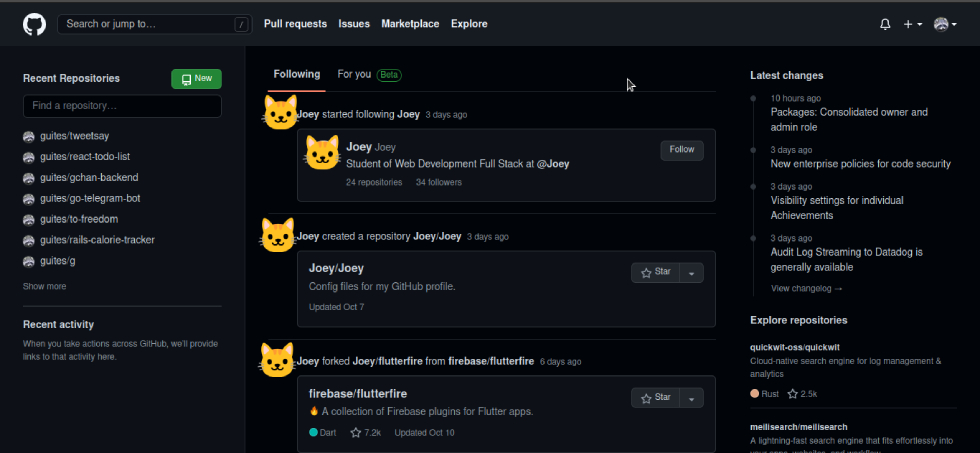
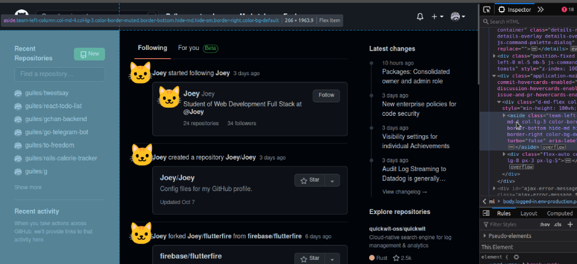
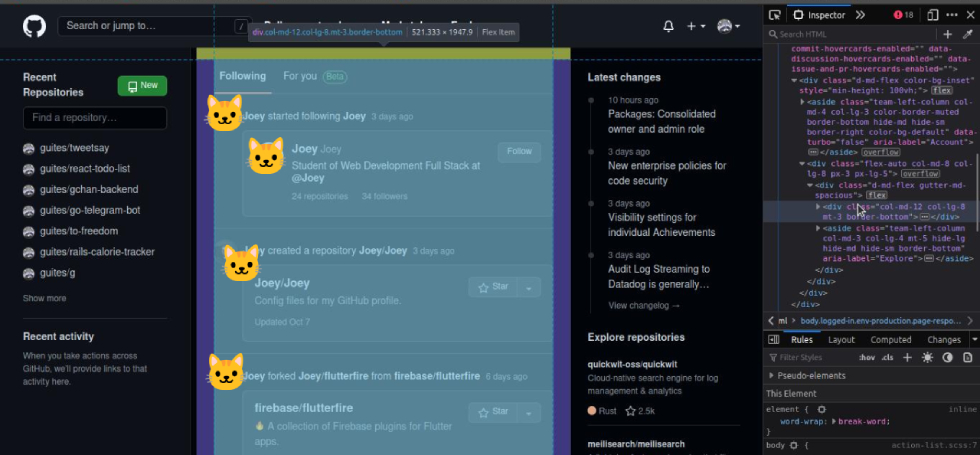
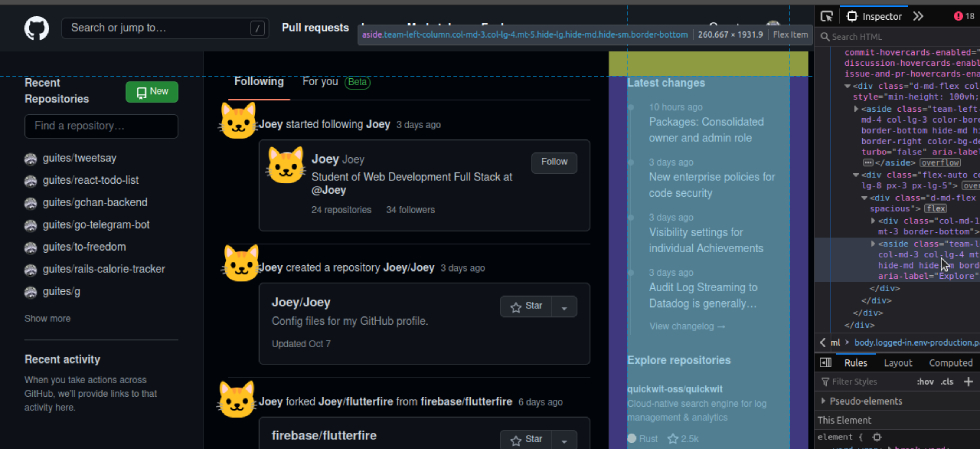
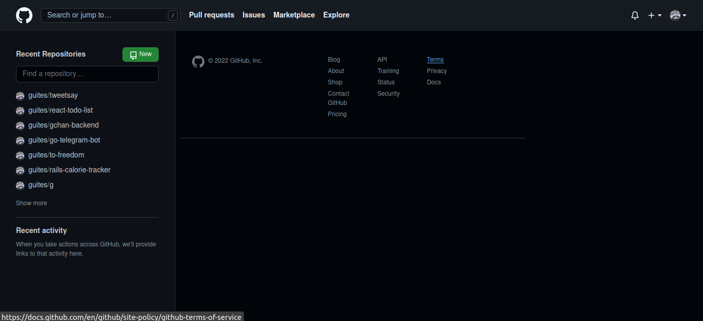
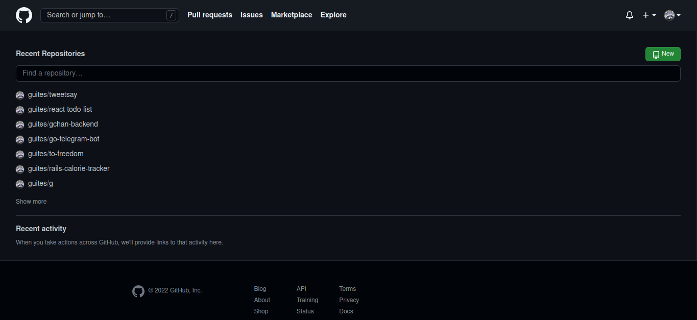

Remova o feed do github
mg;nl: vamos criar um bookmarklet pra remover o feed da página inicial do github.
Se você é como eu, provavelmente já entrou no seguinte loop:
- Você fica com dúvida sobre um projeto hospedado no github
- Você acessa https://github.com.
- Você fica interessado no que as pessoas andaram fazendo, e acaba clicando em alguma coisa.
- Você mata a curiosidade e sai do github.
- ????
- Você lembra da dúvida sobre o projeto
- repeat
Vamos remover a distração da homepage do github usando um pouco de javascript.
Bookmarklets
Bookmarklets são como favoritos, mas ao invés de direcionar para uma nova página, rodam um snippet de javascript na página atual.
Eles precisam seguir as seguintes regras:
- Ter
javascript:no início - Estar encapsulado numa IIFE
Ou seja, deve seguir o seguinte formato:
javascript:(function(){
alert("Bookmarklet!");
})();
Feed: página inicial do github
Se você está logado, a página inicial do github tem esse formato:

Inspecionando o HTML da página, vemos que a seção principal é dividida em dois containers.
O primeiro contém o menu da esquerda (menu com os repositórios):

O segundo é dividido em dois. Primeiro, o feed central:

Depois, o feed com as últimas atualizações e recomendações de repositório:

Removendo os feeds
Sabendo o markup, podemos utilizar javascript para removê-los.
O feed principal pode ser selecionado pelo seu id:
document.querySelector("#dashboard-feed-frame")
O feed de atualizações pode ser selecionado pelo seu aria-role:
document.querySelector("aside[aria-label=Explore]")
Podemos utilizar uma iteração para selecionar e removê-los:
[
"#dashboard-feed-frame",
"aside[aria-label=Explore]"
].forEach((selector) => document.querySelector(selector).remove())
Você pode ver o resultado na imagem abaixo:

Ocupando a tela com informações (úteis)
A tela fica meio vazia, e o espaço mau aproveitado, sem os feeds.
Vamos expandir o conteúdo útil. O que sobrou na tela principal pode ser acessado pela classe .application-main.
const appMain = document.querySelector(".application-main");
A estrutura dentro desse elemento é no seguinte formato:
<div class="application-main " ...>
<div class="d-md-flex color-bg-inset" style="min-height: 100vh;">
<aside data-turbo="false" class="team-left-column ..." aria-label="Account">
<!-- LISTA DE REPOSITÓRIOS -->
</aside>
<div class="flex-auto col-md-8 col-lg-8 px-3 px-lg-5">
<!-- RODAPÉ -->
</div>
</div>
</div>
A <div> logo abaixo do nosso appMain serve como um wrapper flexbox. Vamos adicionar um flex-direction: column e centralizar o conteúdo:
appMain.querySelector("div").style.flexDirection = "column";
appMain.querySelector("div").style.alignItems = "center";
Vamos também expandir a lista de repositórios para ocupar toda a largura disponível:
["aside", "aside div"].forEach((sel) => appMain.querySelector(sel).style.minWidth = "100vw");
Sem distrações!

O bookmarklet final
O seguinte código vai ajustar sua home em um clique:
[
"#dashboard-feed-frame",
"aside[aria-label=Explore]"
].forEach((selector) => document.querySelector(selector).remove());
const appMain = document.querySelector(".application-main");
appMain.querySelector("div").style.flexDirection = "column";
appMain.querySelector("div").style.alignItems = "center";
["aside", "aside div"].forEach((sel) => appMain.querySelector(sel).style.minWidth = "100vw");
E, formatado para bookmarklet, fica da seguinte forma:
javascript:(function(){
[
"#dashboard-feed-frame",
"aside[aria-label=Explore]"
].forEach((selector) => document.querySelector(selector).remove());
const appMain = document.querySelector(".application-main");
appMain.querySelector("div").style.flexDirection = "column";
appMain.querySelector("div").style.alignItems = "center";
["aside", "aside div"].forEach((sel) => appMain.querySelector(sel).style.minWidth = "100vw");
})();
Referências
Tags: bookmarklet, javascript